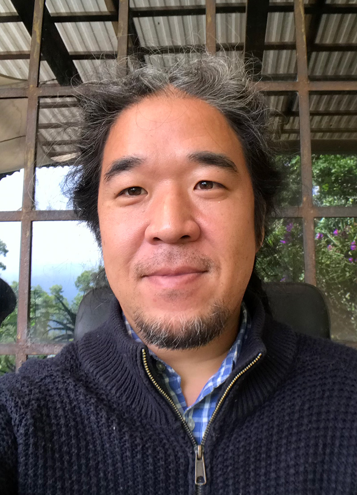
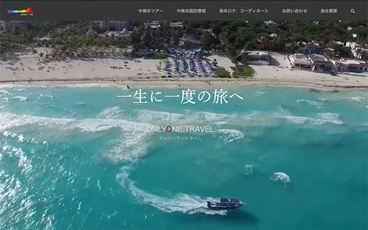
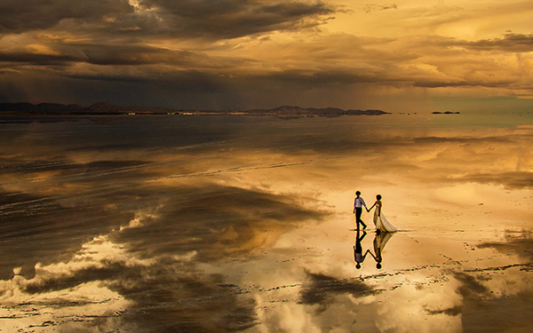
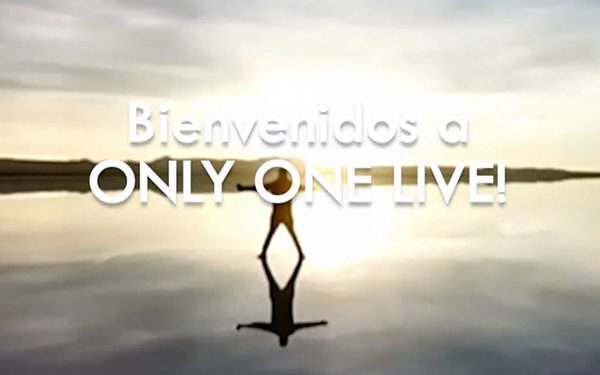

<!DOCTYPE html>
<html lang="en">

<head>
  <meta charset="utf-8">
  <meta content="width=device-width, initial-scale=1.0" name="viewport">

  <title>iPortfolio Bootstrap Template - Index</title>
  <meta content="" name="description">
  <meta content="" name="keywords">

  <!-- Favicons -->
  <link href="assets/img/favicon.png" rel="icon">
  <link href="assets/img/apple-touch-icon.png" rel="apple-touch-icon">

  <!-- Google Fonts -->
  <link href="https://fonts.googleapis.com/css?family=Open+Sans:300,300i,400,400i,600,600i,700,700i|Raleway:300,300i,400,400i,500,500i,600,600i,700,700i|Poppins:300,300i,400,400i,500,500i,600,600i,700,700i" rel="stylesheet">

  <!-- Vendor CSS Files -->
  <link href="assets/vendor/bootstrap/css/bootstrap.min.css" rel="stylesheet">
  <link href="assets/vendor/icofont/icofont.min.css" rel="stylesheet">
  <link href="assets/vendor/boxicons/css/boxicons.min.css" rel="stylesheet">
  <link href="assets/vendor/venobox/venobox.css" rel="stylesheet">
  <link href="assets/vendor/owl.carousel/assets/owl.carousel.min.css" rel="stylesheet">
  <link href="assets/vendor/aos/aos.css" rel="stylesheet">

  <!-- Template Main CSS File -->
  <link href="assets/css/style.css" rel="stylesheet">

  <!-- =======================================================
  * Template Name: iPortfolio - v1.5.1
  * Template URL: https://bootstrapmade.com/iportfolio-bootstrap-portfolio-websites-template/
  * Author: BootstrapMade.com
  * License: https://bootstrapmade.com/license/
  ======================================================== -->
</head>

<body>

  <!-- ======= Mobile nav toggle button ======= -->
  <button type="button" class="mobile-nav-toggle d-xl-none"><i class="icofont-navigation-menu"></i></button>

  <!-- ======= Header ======= -->
  <header id="header">
    <div class="d-flex flex-column">

      <div class="profile">
        
        <h1 class="text-light"><a href="index.html">Ryo Ohira</a></h1>
        <div class="social-links mt-3 text-center">
          <a href="https://www.instagram.com/riodekito/" class="instagram"><i class="bx bxl-instagram"></i></a>
        </div>
      </div>

      <nav class="nav-menu">
        <ul>
          <li class="active"><a href="index.html"><i class="bx bx-home"></i> <span>Home</span></a></li>
          <li><a href="#about"><i class="bx bx-user"></i> <span>About</span></a></li>
          <li><a href="#resume"><i class="bx bx-file-blank"></i> <span>Resume</span></a></li>
          <li><a href="#portfolio"><i class="bx bx-book-content"></i> Portfolio</a></li>
          <li><a href="#skills"><i class="bx bx-server"></i> Skills</a></li>

        </ul>
      </nav><!-- .nav-menu -->
      <button type="button" class="mobile-nav-toggle d-xl-none"><i class="icofont-navigation-menu"></i></button>

    </div>
  </header><!-- End Header -->

  <!-- ======= Hero Section ======= -->
  <section id="hero" class="d-flex flex-column justify-content-center align-items-center">
    <div class="hero-container" data-aos="fade-in">
      <h1>Ryo Ohira</h1>
      <p>I'm <span class="typed" data-typed-items="Web Designer, Photographer, Dive Master, Drone Pilot,"></span></p>
    </div>
  </section><!-- End Hero -->

  <main id="main">

    <!-- ======= About Section ======= -->
    <section id="about" class="about">
      <div class="container">

        <div class="section-title">
          <h2>About</h2>
          <p>東京都出身</br>
            都立高校卒業後、アメリカの大学に入学。カリフォルニア州立大学ロングビーチ校で写真を専攻、美術学士を修得。</br>
            卒業後、日本の企業で８年間ウェブデザイナー/フォトグラファーとしてオンラインショップの立ち上げ、商品撮影などに携わりました。</br>
            2010年よりエクアドルの旅行会社に就職し、日本マーケット向けにツアーを紹介・販売するウェブサイトの立ち上げに携わり、旅行写真撮影、通訳ガイド、ガラパゴスダイビングガイドなどの業務を経験。</br>
            2013年にパナマの旅行会社に移籍し、日本マーケット向けの旅行サイトを立ち上げ、以来インハウスのウェブデザイナー/フォトグラファーとしてフルリモートで働いています。</br>
            現在は中米グアテマラのアンティグアに住んでいます。</p>
        </div>

        <div class="row">
          <div class="col-lg-4" data-aos="fade-right">
            
          </div>
          <div class="col-lg-8 pt-4 pt-lg-0 content" data-aos="fade-left">
            <h3>Web Designer / Photographer</h3>
            <p class="font-italic">
              2000年頃からウェブページをデザインしてきたので20年以上の経験があります。2010年に南米の旅行会社に就職してからは主にWordpressを使用しています。
            </p>
            <div class="row">
              <div class="col-lg-6">
                <ul>
                  <li><i class="icofont-rounded-right"></i> <strong>年齢:</strong> 45</li>
                  <li><i class="icofont-rounded-right"></i> <strong>最終学歴:</strong> BFA in Photography（美術学士)</li>
                  <li><i class="icofont-rounded-right"></i> <strong>居住地</strong> Antigua Guatemala</li>
                  
                </ul>
              </div>
              <div class="col-lg-6">
                <ul>
                  <li><i class="icofont-rounded-right"></i> <strong>誕生日:</strong> 11 11 1975</li>
                  <li><i class="icofont-rounded-right"></i> <strong>Phone:</strong> +502 4651 6533</li>
                  <li><i class="icofont-rounded-right"></i> <strong>Email:</strong> ohira4@gmail.com</li>
                </ul>
              </div>
            </div>
            <p>
              アメリカの大学で写真を学び、水中カメラマンになりたくてPADIダイブマスターの資格も取りましたが、結局大学時代から培っていたウェブデザインのスキルを生かした仕事をするようになりました。</br>
              写真が撮れるのを強みとして、これまでに商品写真やモデル撮影、ウェディングフォト、旅行写真、自然写真、動物写真、マクロ写真、ドローン写真などを撮影してウェブサイトに掲載してきました。</br>
              7年前から趣味でドローン撮影をしています。</br>
              ドローンをウユニ塩湖に墜落させること5機後、2017年にはDJIのドローンスペシャリストも取得し、自社内の旅行サイトの中で映像を使えるレベルになりました。</br>
              最近は、現実での旅行業が停止ししたため、主にオンラインツアープロモーション動画を作成してYoutubeアカウントに載せる業務をしています。
            </p>
          </div>
        </div>

      </div>
    </section><!-- End About Section -->


   <!-- ======= Portfolio Section ======= -->
    <section id="portfolio" class="portfolio section-bg">
          <div class="container">
    
            <div class="section-title">
              <h2>Portfolio</h2>
              <p>過去の仕事をウェブデザイン、フォトグラフィー、プロモーションビデオに分け、リンク先でいくつかご紹介します。
              </p>
            </div>
    
    
            <div class="row portfolio-container" data-aos="fade-up" data-aos-delay="100">
    
              <div class="col-lg-4 col-md-6 portfolio-item filter-app">
                <p style="text-align:center; padding-bottom: 3%;"><a href="portfolio-web.html" title="More Details"><i class="icofont-rounded-right"></i>
                  <strong>Web Design</strong></a>
                </p>
                <div class="portfolio-wrap">
                  
                  <div class="portfolio-links">
                    <a href="portfolio-web.html" title="More Details"><i class="bx bx-link"></i></a>
                  </div>
                </div>
                <p style="text-align:left; padding-top: 3%; size: 75%;">
                  インハウスで旅行会社のウェブサイトを作成
                </p>
              </div>
    
              <div class="col-lg-4 col-md-6 portfolio-item filter-app">
                <p style="text-align:center; padding-bottom: 3%;"><a href="portfolio-photo.html" title="More Details"><i class="icofont-rounded-right"></i>
                  <strong>Photography</strong></a>
                </p>
                <div class="portfolio-wrap">
                  
                  <div class="portfolio-links">
                    <a href="portfolio-photo.html" title="More Details"><i class="bx bx-link"></i></a>
                  </div>
                </div>
                <p style="text-align:left; padding-top: 3%; size: 75%;">
                  トラベル/ウェディング/アニマルフォトグラファー
                </p>
              </div>
    
              <div class="col-lg-4 col-md-6 portfolio-item filter-app">
                <p style="text-align:center; padding-bottom: 3%;"><a href="portfolio-films.html" title="More Details"><i class="icofont-rounded-right"></i>
                  <strong>Promotion Video</strong></a>
                </p>
                <div class="portfolio-wrap">
                  
                  <div class="portfolio-links">
                    <a href="portfolio-films.html" title="More Details"><i class="bx bx-link"></i></a>
                  </div>
                </div>
                <p style="text-align:left; padding-top: 3%; size: 75%;">
                  ツアーのプロモーション動画を作成
                </p>
              </div>
    
    
            </div>
    
          </div>
    </section><!-- End Portfolio Section -->

   <!-- ======= Resume Section ======= -->
    <section id="resume" class="resume">
      <div class="container">

        <div class="section-title">
          <h2>Resume</h2>
          <p></p>
        </div>

        <div class="row">
          <div class="col-lg-6" data-aos="fade-up">
            <h3 class="resume-title">概略</h3>
            <div class="resume-item pb-0">
              <h4>大平　令</h4>
              <p><em>ウェブデザイナー/フォトグラファーです。</em><br>
                <em>中南米の旅行会社で働いていますがコロナ禍となり旅行業が停止してしまったため、フルリモートで求職中です。</em></p>
              <ul>
                <li>世界遺産アンティグア・グアテマラに住んでいます</li>
                <li>ガラパゴスダイビングガイド/ウユニウェディングフォトグラファー経験あり</li>
                <li>生き物好き</li>
              </ul>
            </div>

            <h3 class="resume-title">学歴</h3>
            <div class="resume-item">
              <h4>Associates of Arts</h4>
              <h5>1995 - 1998</h5>
              <p><em>Pierce College, WA, USA</em></p>
              <p>米国ワシントン州タコマのコミュニティカレッジで<b>AA(短期大学士)を修得。</b></br>
             都立高校卒業後Zoologyを勉強するために米国留学を決意し、米国ワシントン州のシアトルに近い郊外の<b>コミュニティ・カレッジに留学。</b></br>
                豊かな湾と森に囲まれた大自然の中で大学に通い、東京では経験の出来ないアメリカでの暮らしに魅了されました。</br>
                ESLと合わせて約3年で<b>AAを取得。</b></br>
                シアトル地方は1年中雨が降っていたため、卒業後天気の良いカリフォルニア州ロサンゼルス近郊の<b>四年制大学に編入。</b>
              </p>
            </div>
            <div class="resume-item">
              <h4>Bachelor of Fine Arts in Photography</h4>
              <h5>1998 - 2002</h5>
              <p><em>California State University Long Beach</em></p>
              <p>カリフォルニア州立大学ロングビーチ校で写真学部を専攻、芸術学部写真学科で<b>BFA(美術学士)を修得。</b></br>
              海辺での暮らしを経て、Marine Biologyを専攻するつもりで4年制大学に編入しますが州外の単位が大部分認められず、そこで出会ったPhotographyに専攻を変え<b>水中カメラマンを目指すように</b>なります。</br>
              デジタルカメラはまだ普及しておらず、白黒フィルムを暗室にこもって紙に焼く作業を延々と経験。</br>
              教授がハリウッドで活躍する現役のプロフォトグラファーだったため、アートとしての刺激を受けつつ職業としての写真家の現実を学びました。</br>
              Photoshopの履修をきっかけに、写真作品の表現として利用するために<b>FlashやDreamweaverを独習。</b>この頃からウェブページ作りを始めます。</br>
              在学中にNYで911同時多発テロがあり、アメリカ中が在留外国人に対して疑心暗鬼となった翌年に卒業。帰国を決意。</br>
              学部が一緒だったため、卒業式には「ハリウッドで監督デビューしたので大学中退した37年後に最後の単位を取得して大学を卒業する」というスティーブン・スピルバーグ氏が出席し、生涯の良い思い出となりました。</br>
            </p>
            </div>
          </div>
          <div class="col-lg-6" data-aos="fade-up" data-aos-delay="100">
            <h3 class="resume-title">職務経歴</h3>
            <div class="resume-item">
              <h4>オンラインショップのウェブデザイナー/フォトグラファー</h4>
              <h5>2002 - 2003</h5>
              <em>オンライン雑貨ショップ｜秋葉原</em>
              <p style="font-size: 90%;">
               帰国後、アクセサリーなどを楽天で販売する会社に契約社員として入社。商品写真撮影やウェブページデザインを担当</br>
               iMode対応の絵文字入りメールマガジン作成などを経験
              </p>
            </div>
            <div class="resume-item">
              <h4>ダイブマスター</h4>
              <h5>2003/9 - 11</h5>
              <em>ダイブショップ｜ホンデュラス,ウティラ島</em>
              <p style="font-size: 90%;">
               ダイブマスターを取得する資金が溜まったので、世界一安く資格が取れるホンデュラスのウティラ島へ渡航</br>
               ライセンス取得する滞在期間中、ダイブマスター候補としてダイビングガイドなどの仕事を経験
              </p>
            </div>
            <div class="resume-item">
              <h4>映像制作会社のウェブデザイナー/フォトグラファー</h4>
              <h5>2004 - 2007</h5>
              <em>株式会社ワンツーワンプロダクツ｜渋谷</em>
              <p style="font-size: 90%;">
               帰国後水中カメラマンの道を模索するも難航し、映像制作会社のインハウスウェブデザイナーとして就職</br>
                FlashとDream weaverを使い、オンラインショップを一人で立ち上げる</br>
                ウェブ事業部担当となり、企業や大学、商店街などのウェブサイト制作を経験
              </p>
            </div>
            <div class="resume-item">
              <h4>革バッグブランドのウェブデザイナー/フォトグラファー</h4>
              <h5>2007 - 2010</h5>
              <em>株式会社ルサックアダム｜両国</em>
              <p style="font-size: 90%;">
              前職での担当であった革バッグブランド会社に引き抜かれ、同社のオンラインショップを立ち上げる</br>
              Dream weaverを使いブランドショップを作成</br>
              楽天にも加入し売上を伸ばす<br>
              商品撮影やモデル撮影も兼任</br>
              Illustratorを使っての紙媒体作成や、WEB広告、メール返信、検品・発送作業までウェブショップ運営業務を経験</br>
              </ul>
            </div>
            <div class="resume-item">
              <h4>ガラパゴスツアーのウェブデザイナー/フォトグラファー</h4>
              <h5>2010 - 2013</h5>
              <em>Surtrek｜エクアドル,キト</em>
              <p style="font-size: 90%;">革バッグブランドが吸収合併されたため、心機一転海外就職を検索</br>
                ガラパゴスクルーズツアーを扱うエクアドルの旅行会社に就職し、月給500ドルになる（エクアドルの平均的初任給）</br>
                Dreamweaverで日本市場向けサイトを構築</br>
                視察で行くアンデスやアマゾンやガラパゴスなど秘境のトラベルフォト撮影や通訳ガイド仕事を経験</br>
                </p>
            </div>
            <div class="resume-item">
              <h4>秘境專門旅行会社のウェブデザイナー/フォトグラファー</h4>
              <h5>2013 - </h5>
              <em>株式会社オンリーワントラベル / パナマ</em>
              <p style="font-size: 90%;">前社の日本市場担当者が独立した際に引き抜かれ、パナマに設立した旅行会社に移籍</br>
                日本市場向けに中南米全域のツアーを販売するサイトを一人で構築</br>
                ウユニ塩湖での星空ツアーやウェディングフォトツアーを発案</br>
                ウェディングフォトグラファーとしてウユニ塩湖やキューバのハバナでの出張撮影を経験</p>
              <p>本社のあるパナマシティに1年以上住んでいましたが年中暑すぎて体に合わなかったため、現在は住まいを気候の良いグアテマラに移しフルリモートで就労中です</p>
            </div>
          </div>
        </div>

      </div>
    </section><!-- End Resume Section -->

    <!-- ======= Skills Section ======= -->
    <section id="skills" class="skills section-bg">
      <div class="container">

        <div class="section-title">
          <h2>Skills & Languages</h2>
          <p></p>
        </div>


        <div class="row skills-content">

          <div class="col-lg-6" data-aos="fade-up">

            <div class="progress">
              <span class="skill">Wordpress <i class="val">85%</i></span>
              <div class="progress-bar-wrap">
                <div class="progress-bar" role="progressbar" aria-valuenow="85" aria-valuemin="0" aria-valuemax="100"></div>
              </div>
            </div>

            <div class="progress">
              <span class="skill">Photoshop <i class="val">90%</i></span>
              <div class="progress-bar-wrap">
                <div class="progress-bar" role="progressbar" aria-valuenow="90" aria-valuemin="0" aria-valuemax="100"></div>
              </div>
            </div>

            <div class="progress">
              <span class="skill">Final Cut Pro <i class="val">75%</i></span>
              <div class="progress-bar-wrap">
                <div class="progress-bar" role="progressbar" aria-valuenow="75" aria-valuemin="0" aria-valuemax="100"></div>
              </div>
            </div>

          </div>
          <div class="col-lg-6" data-aos="fade-up">

            <div class="progress">
              <span class="skill">日本語 <i class="val"></i></span>
              <div class="progress-bar-wrap">
                <div class="progress-bar" role="progressbar" aria-valuenow="100" aria-valuemin="0" aria-valuemax="100"></div>
              </div>
            </div>

            <div class="progress">
              <span class="skill">English <i class="val"></i></span>
              <div class="progress-bar-wrap">
                <div class="progress-bar" role="progressbar" aria-valuenow="88" aria-valuemin="0" aria-valuemax="100"></div>
              </div>
            </div>

            <div class="progress">
              <span class="skill">Español <i class="val"></i></span>
              <div class="progress-bar-wrap">
                <div class="progress-bar" role="progressbar" aria-valuenow="55" aria-valuemin="0" aria-valuemax="100"></div>
              </div>
            </div>

          </div>
          <div class="col-lg-6" data-aos="fade-up" data-aos-delay="100">

            <div class="progress">
              <span class="skill">Photography <i class="val">Pro Wedding Photographer</i></span>
              <div class="progress-bar-wrap">
                <div class="progress-bar" role="progressbar" aria-valuenow="90" aria-valuemin="0" aria-valuemax="100"></div>
              </div>
            </div>

            <div class="progress">
              <span class="skill">Scuba Diving <i class="val">Dive Master</i></span>
              <div class="progress-bar-wrap">
                <div class="progress-bar" role="progressbar" aria-valuenow="90" aria-valuemin="0" aria-valuemax="100"></div>
              </div>
            </div>

            <div class="progress">
              <span class="skill">Drone <i class="val">DJI Specialist</i></span>
              <div class="progress-bar-wrap">
                <div class="progress-bar" role="progressbar" aria-valuenow="90" aria-valuemin="0" aria-valuemax="100"></div>
              </div>
            </div>

          </div>

        </div>

      </div>
      
    </section><!-- End Skills Section -->


  </main><!-- End #main -->

  <!-- ======= Footer ======= -->
  <footer id="footer">
    <div class="container">
      <div class="copyright">
        &copy; Copyright <strong><span>iPortfolio</span></strong>
      </div>
      <div class="credits">
        <!-- All the links in the footer should remain intact. -->
        <!-- You can delete the links only if you purchased the pro version. -->
        <!-- Licensing information: https://bootstrapmade.com/license/ -->
        <!-- Purchase the pro version with working PHP/AJAX contact form: https://bootstrapmade.com/iportfolio-bootstrap-portfolio-websites-template/ -->
        Designed by <a href="https://bootstrapmade.com/">BootstrapMade</a>
      </div>
    </div>
  </footer><!-- End  Footer -->

  <a href="#" class="back-to-top"><i class="icofont-simple-up"></i></a>

  <!-- Vendor JS Files -->
  <script src="assets/vendor/jquery/jquery.min.js"></script>
  <script src="assets/vendor/bootstrap/js/bootstrap.bundle.min.js"></script>
  <script src="assets/vendor/jquery.easing/jquery.easing.min.js"></script>
  <script src="assets/vendor/php-email-form/validate.js"></script>
  <script src="assets/vendor/waypoints/jquery.waypoints.min.js"></script>
  <script src="assets/vendor/counterup/counterup.min.js"></script>
  <script src="assets/vendor/isotope-layout/isotope.pkgd.min.js"></script>
  <script src="assets/vendor/venobox/venobox.min.js"></script>
  <script src="assets/vendor/owl.carousel/owl.carousel.min.js"></script>
  <script src="assets/vendor/typed.js/typed.min.js"></script>
  <script src="assets/vendor/aos/aos.js"></script>

  <!-- Template Main JS File -->
  <script src="assets/js/main.js"></script>

</body>

</html>